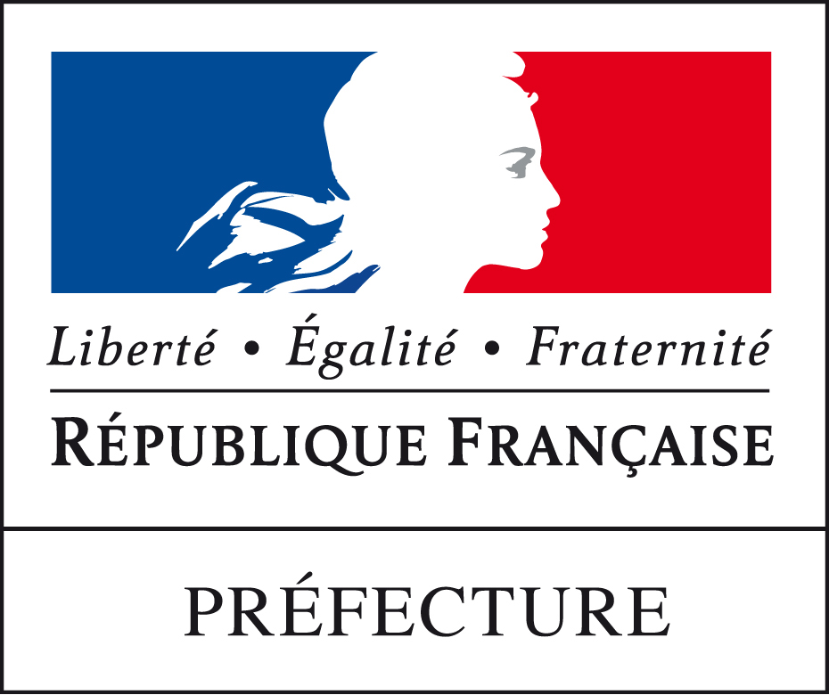

Apprenti Technicien de Maintenance et d'exploitation - Prefecture du Bas-Rhin
- Assistances aux utilisateurs
- Déploiement d'un serveur de filtrage connexion réseau
- Installation de stations blanches pour la sécurité du SI
Equipe de projet ELEQTA - Ecole des Hautes Etudes en Sciences Sociales (EHESS)
- Enquête et interview sur terrain
- Veille électorale
- Analyse des données recueillis et saisie sur la plateforme numérique du projet